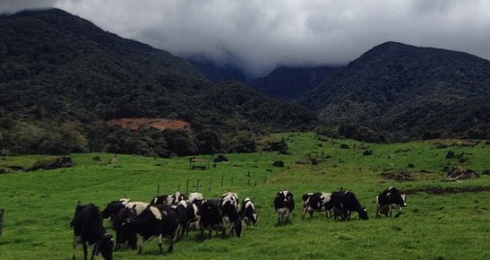
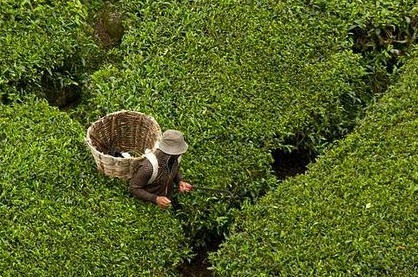

Kundasang, Sabah is the place all of us have always drawn as a child – a small wooden house with a magnificent view over the paddy fields and the majestic mountains beyond. If you are keen in exploring the best of Sabah, Kundasang is guaranteed to take your breath away with its majestic views. A sanctuary away from the city, prep yourself before a Kundasang trip with our comprehensive guide on what to know and where to go for your next visit to the Land below the Wind. Take our words, do not leave Kundasang without visiting these places:
With its cool air, lush hillscape and touch of colonial nostalgia, Cameron Highlands lures both locals and globetrotters to this weekend wonderland. Here is a comprehensive list of things to do in the highlands, from the not-to-be-missed activities, to uniquely local favorites. Keep this for your next trip!
Desa Cattle Dairy Farm
Located at the foothill of Mount Kinabalu, Desa Cattle Dairy Farm offers one of the most amazing scenery one could envision. Often chosen as a wedding photography destination, with the majestic Mount Kinabalu overlooking beautiful green pastures, the scenery is breathtaking, not forgetting the cool breeze that Kundasang has to offer.
The real attraction here is the cattle farm, producing about 900,00 litres of milk per year. The farm is 199 hectars and most of the milking cows are Friesians, the highest milk producers of all cattle breeds. It is an ideal destination for the whole family, where there are activities such as feeding the calves with bottled milk, feeding goats with grass, how milk is processed as well as the milking process are available for all. If you have ever wondered how milk is made, Desa Cattle Farm is the place for you. Before leaving, don’t forget to get some souvenirs especially the popular dairy products like Desa Cattle’s milk in a box as well as their ice cream. A visit here is both educational and fun!
A short road trip will bring you to the Desa cattle farms are the most visited tourist spot in Kundasang. You could capture some postcard-worthy pictures while you’re here. With the Friesan cows moving around a landscape of meadows and rolling hills, the views are breathtaking. The park entrance fee to the farm is RM 5 per person. The trip includes strolling around the scenic locales within the farm, watching the process of milking and Desa cattle feeding. While you’re at the Desa Dairy farm, you could try out some fresh milk, yogurt, and other dairy products too. It is recommended to visit the place in the morning hours with breakfast at the farm
Sabah Tea Gardens
The tranquility offered by the Sabah tea gardens nearby is unmatched. The sprawling tea gardens along with the cool freshness of the mountain air makes up for a perfect rejuvenating holiday. There is no admission fee to the Sabah tea gardens. However, for a small fee of RM 14, you can get a guided tour of the tea factory to observe the tea making process. Finally, you can’t leave the tea plantations without tasting Sabah’s best organically produced tea. Even if you’re not a tea person, you’ll just fall in love with the aroma and rich flavors of the finest tea in Sabah produced right here.